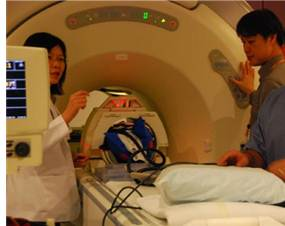
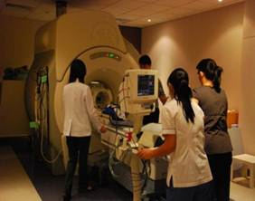
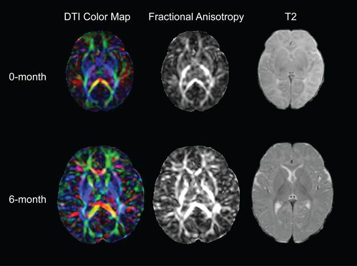

Laboratory For Medical Image Data Sciences
Overview: Growth Up in Singapore Towards Healthy Outcomes (GUSTO)



Figure 1. the GUSTO project
The GUSTO involves a partnership of two academic research centers, National University of Singapore (NUS) and Singapore Institute for Clinical Sciences (SICS) with two child health centers; National University Hospital (NUH) and Kandang Kerbau Women's and Children's Hospital (KKH). The GUSTO project focuses on the relation between fetal development and the risks for obesity and metabolic dysfunction as well as psychopathology. The GUSTO birth cohort was recruited from Asian women aged 18 years and above attending the first trimester antenatal ultrasound scan clinic at the NUH and KKH. A total of 1358 participants were recruited with informed consent. The participants were Singapore residents of Chinese, Malay or Indian ethnic origin, with a targeted composition ratio of 66, 17 and 17 respectively, based on the ethnic composition of Singapore. Mothers on chemotherapy, psychotropic drugs, including antidepressant or anxiolytic medications, or with Type I Diabetes Mellitus were excluded.
The neurocognitive domain of the GUSTO aims to establish
1) neurodevelopmental assessments that include multi-modal neuroimaging techniques (structural MRI, DTI, and resting-state fMRI), electrophysiology and cognitive-emotional evaluations from infancy onwards;
2) the developmental trajectory of the brain and cognitive-emotional functions in early life;
3) influences of maternal support on brain and cognitive-emotional development of the offspring.
In addition, all GUSTO study participants are genotyped. The study is certainly not powered for genome-wide association analyses. Instead, genotyping is performed with the intent of examining candidate gene – environment interdependency, and hypothesis-generating analyses. Moreover, we will be performing genome-wide epigenetic analyses using conceptual tissues, including both placenta and chord samples using the recently available Illumina 450K methylation array. These analyses will permit associations of epigenetic states of specific genomic regions with functional and (or) psychopathological outcomes in the sample. An additional strength will be the ability to relate genomic variation with that at the level of the epigenome, and indeed to examine epigenetic states as the outcome of gene – environment interactions on brain and cognitive functions.